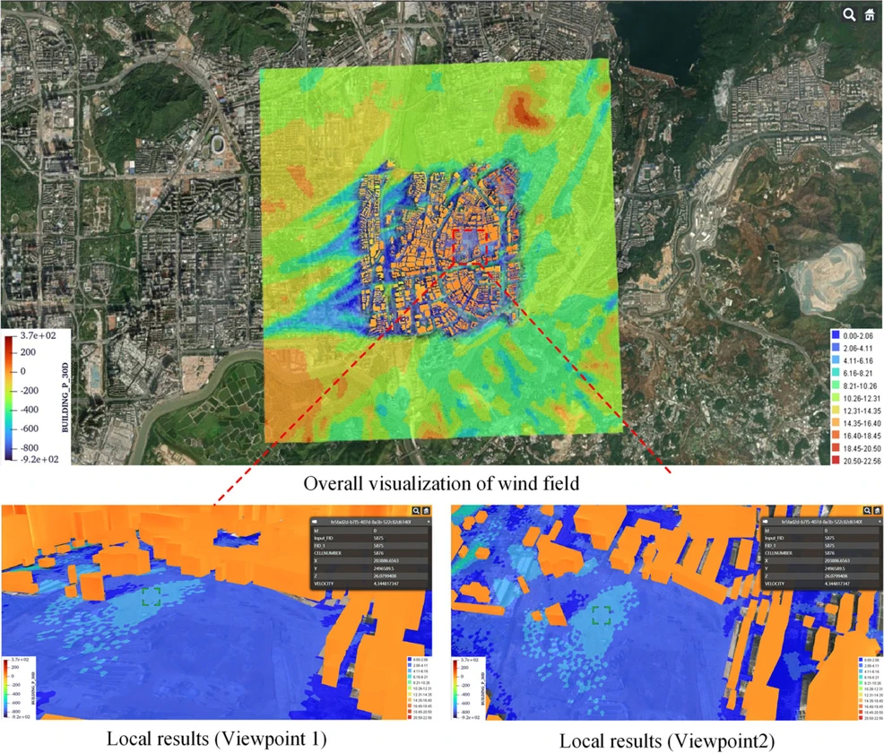

01
Structural wind engineering
工程结构抗风
从城市与复杂地形风场出发，研究风荷载、结构响应、气动优化与减振控制。
AI 方法与工程价值
探索工程结构抗风
图神经网络结合结构连接关系、构件参数与荷载预测高层建筑响应，支持结构方案的高效比较。
研究证据docs/source/index.rst 与 docs/_static/custom.css。页面中「精选研究：问题与贡献」区块对应的是当时站点的旧结构，
本原型不是当前发布结构。现行站点仅保留「近期学术进展」：先按已制作解读资格筛选，再按发表日期倒序，每条研究主线最多三篇。
Research directions
01
Structural wind engineering
从城市与复杂地形风场出发，研究风荷载、结构响应、气动优化与减振控制。
图神经网络结合结构连接关系、构件参数与荷载预测高层建筑响应，支持结构方案的高效比较。
研究证据02
Marine energy structures
当前聚焦浮式风电，连接风机、平台、系泊与海洋环境，研究耦合动力响应、平台结构设计和系统优化。
Kriging 代理模型结合多目标优化，减少长期风浪响应的重复计算，用于比较平台成本与疲劳性能的取舍。
研究证据Selected research
围绕实验室的研究问题，选取李朝参与的六项合著论文。作者与来源按原论文保留，论文精解提供研究内容的延伸阅读。

2024
数值风洞
提出 CMRFG 入流湍流生成方法，结合流场统计与压力脉动分析进行验证。
Journal of Computational Physics
2025
结构抗风
以结构图、楼层特征增强与工程知识损失函数构建图神经网络响应代理模型。
Journal of Building Engineering
2023
一体化分析
连接降阶动力模型、长期环境与多目标优化，比较两类半潜式下部结构方案。
Applied Energy
2026
混凝土浮体
提出模块化半潜平台概念，结合长期动力优化和整体强度评价；局部节点仍需细化。
Ocean Engineering
2023
一体化分析
开展 10 MW 风机的 1:70 风洞—波浪水槽模型试验，并与 OpenFAST 模型比较。
Journal of Renewable and Sustainable Energy
Latest academic progress
01
2026 · 工程结构抗风 / 数值风洞
数值风洞｜我们如何用预计算 CFD 数据库加速城市微尺度风环境预测02
2026 · 工程结构抗风 / 数值风洞
数值风洞｜如何把卫星影像转成 CFD 可用城市几何03
2026 · 工程结构抗风 / 结构抗风
结构抗风｜用内置矩形立柱提升液舱阻尼器设计效率Connect & collaborate
欢迎有志于风工程、海洋工程与 AI 工程方法研究的学生和青年研究人员加入实验室交流。也欢迎围绕具体工程问题开展研究合作与技术讨论。